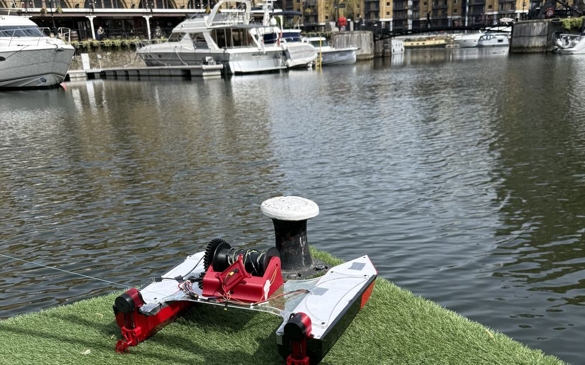

Need 01 · FundingMost needed
Funding
We're looking for funding to keep building. Every dollar goes into hardware on the boat and getting V3 onto the water.
Help fund the boat →
V3 is in build now, and we've reached the limit of what two students can fund and make on their own. We're looking for funding, a mentor in the field, and places to machine and fabricate what we design.
We've designed and built everything so far ourselves, on student budgets. These are the gaps we can't close alone.
We're looking for funding to keep building. Every dollar goes into hardware on the boat and getting V3 onto the water.
Help fund the boat →We're looking for someone who's done this before, in marine robotics, environmental monitoring or water quality, to guide our design and field work.
Offer to mentor →We're looking for shops and services that can make what we can't, like PCBs and machined metal parts.
Offer fabrication →We're designing V3 around real field needs, starting with these conversations.
We're talking with the CRWA team about how D.R.E.A.M.S could collect water-quality data for them.
Our conversations with the Port of Oakland, and with the CRWA, showed us that sediment samples are still collected by sending divers down. That's shaping our long-term plan for a sample-collection arm.
Three kinds of partners will shape the next stage. Each gets a direct line to the founders.
Help us make our survey data scientifically useful.
Support goes straight into the boat.
Have a pond, lake or reservoir you'd like to understand better?
We're students building this from the ground up, so every contribution has a visible effect on the boat. Founding-partner places are open now.
Build logs, test results and what we change because of them.
Access to the survey data from the work you're part of.
You talk to the two people designing and building the boat.
Sponsors are acknowledged on this site and in our project updates.